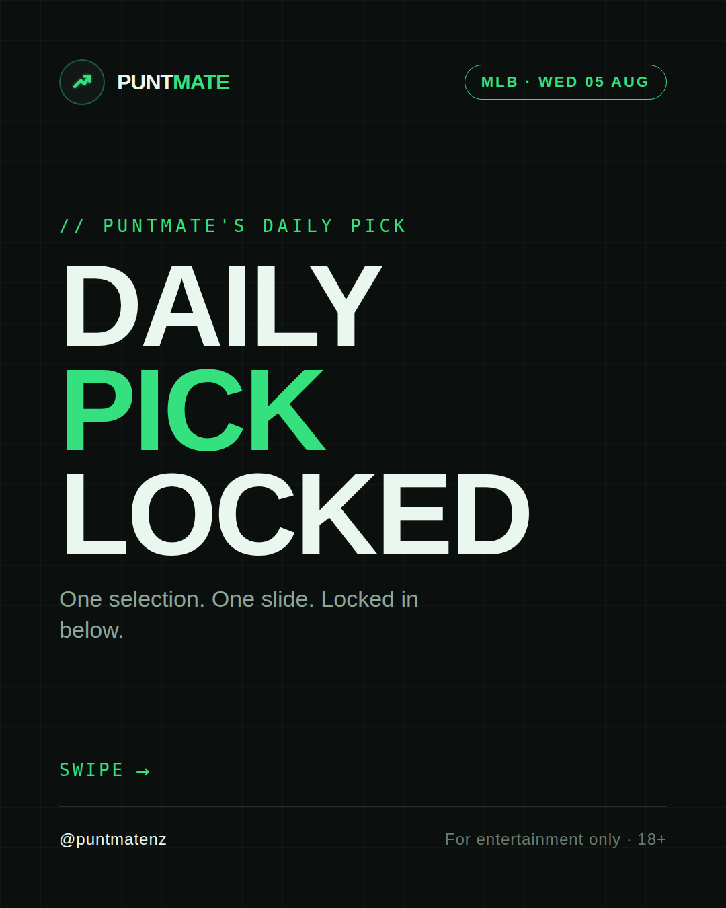
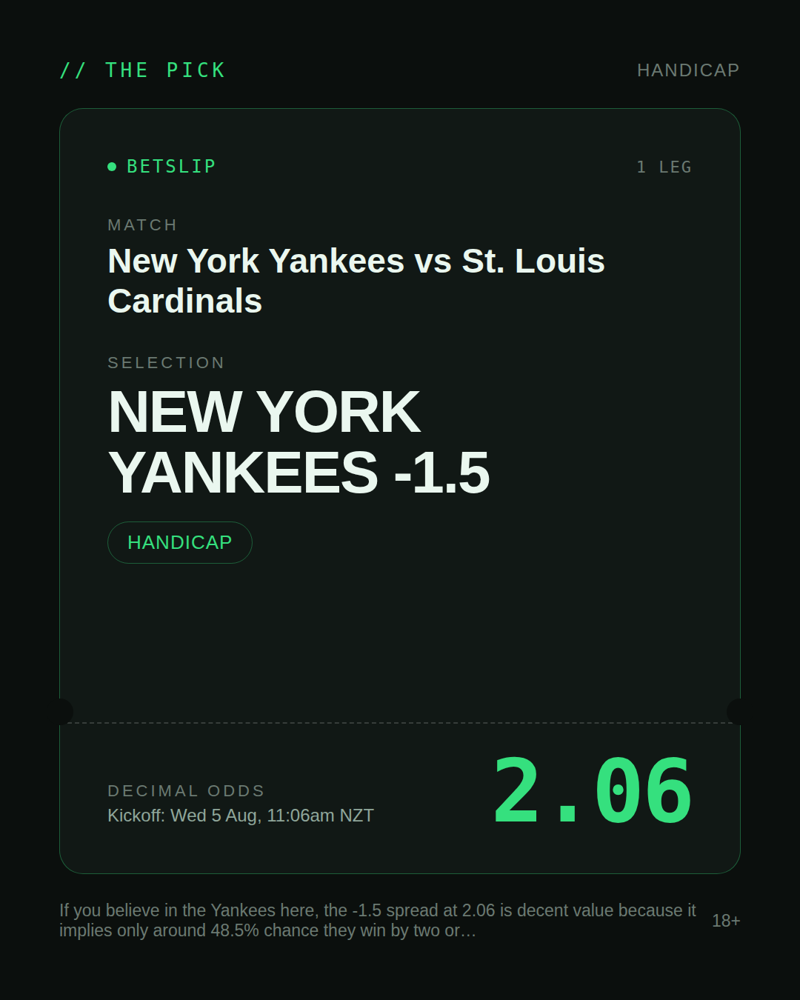
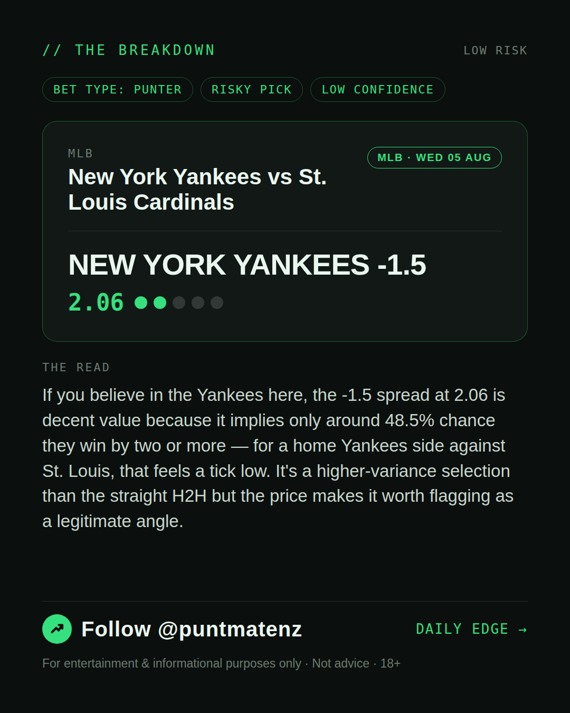
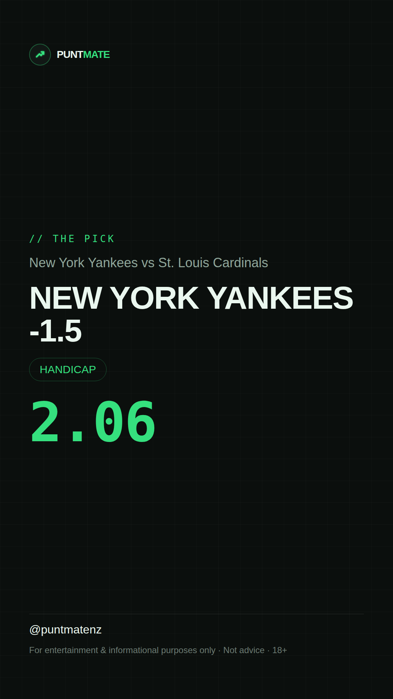

*🎯 PUNTMATE NZ — MLB* 🏟 New York Yankees vs St. Louis Cardinals *PICK:* NEW YORK YANKEES -1.5 *ODDS:* 2.06 (Handicap) *BET TYPE: PUNTER* _If you believe in the Yankees here, the -1.5 spread at 2.06 is decent value because it implies only around 48.5% chance they win by two or more — for a home Yankees side against St. Louis, that feels a tick low. It's a higher-variance selection than the straight H2H but the price makes it worth flagging as a legitimate angle._ ────────────────── 📲 Join Telegram for daily picks ⚠️ For entertainment & informational purposes only. Not advice. 18+.
🎯 MLB — New York Yankees vs St. Louis Cardinals NEW YORK YANKEES -1.5 @ 2.06 (Handicap) BET TYPE: PUNTER Solid touch here. Not a lock, but the value's real and the form backs it up. If you believe in the Yankees here, the -1.5 spread at 2.06 is decent value because it implies only around 48.5% chance they win by two or more — for a home Yankees side against St. Louis, that feels a tick low. It's a higher-variance selection than the straight H2H but the price makes it worth flagging as a legitimate angle. Follow for daily value picks → @puntmatenz ⚠️ For entertainment & informational purposes only. Not advice. 18+. #PuntmateNZ #SportsBetting #NZTAB #MLB
| has_pick | True |
| pick_id | 2026-08-04_New_York_Yankees_vs_St_Louis_Cardinals |
| run_id | 30951700704 |
| generated_at | 2026-08-04T21:20:00.044823+00:00 |
| post_date | 2026-08-04 |
| match | New York Yankees vs St. Louis Cardinals |
| sport | baseball_mlb |
| sport_label | MLB |
| market | Handicap |
| selection | NEW YORK YANKEES -1.5 |
| odds | 2.06 |
| bet_type | PUNTER_BET |
| bet_type_label | BET TYPE: PUNTER |
| bet_type_reason | Solid touch here. Not a lock, but the value's real and the form backs it up. If you believe in the Yankees here, the -1.5 spread at 2.06 is decent value because it implies only around 48.5% chance they win by two or more — for a home Yankees side against St. Louis, that feels a tick low. It's a higher-variance selection than the straight H2H but the price makes it worth flagging as a legitimate angle. |
| classification | RISKY_PICK |
| risk | RISKY_PICK |
| confidence | LOW |
| confidence_label | LOW |
| final_explanation | If you believe in the Yankees here, the -1.5 spread at 2.06 is decent value because it implies only around 48.5% chance they win by two or more — for a home Yankees side against St. Louis, that feels a tick low. It's a higher-variance selection than the straight H2H but the price makes it worth flagging as a legitimate angle. |
| public_caution | Keep this one light — the value's there but so is the uncertainty. |
| theme | night |
| carousel_paths | ['data/review/2026-08-04_New_York_Yankees_vs_St_Louis_Cardinals/cover.png', 'data/review/2026-08-04_New_York_Yankees_vs_St_Louis_Cardinals/tip.png', 'data/review/2026-08-04_New_York_Yankees_vs_St_Louis_Cardinals/breakdown.png'] |
| carousel_urls | ['https://raw.githubusercontent.com/kingofthecastle24/puntmate/main/data/cards/2026-08-04_New_York_Yankees_vs_St_Louis_Cardinals_night_1_cover.png', 'https://raw.githubusercontent.com/kingofthecastle24/puntmate/main/data/cards/2026-08-04_New_York_Yankees_vs_St_Louis_Cardinals_night_2_tip.png', 'https://raw.githubusercontent.com/kingofthecastle24/puntmate/main/data/cards/2026-08-04_New_York_Yankees_vs_St_Louis_Cardinals_night_3_breakdown.png'] |
| story_path | data/review/2026-08-04_New_York_Yankees_vs_St_Louis_Cardinals/story.png |
| story_url | https://raw.githubusercontent.com/kingofthecastle24/puntmate/main/data/cards/2026-08-04_New_York_Yankees_vs_St_Louis_Cardinals_night_story.png |
| intended_platforms | ['telegram', 'instagram_feed', 'instagram_story', 'facebook'] |
| workflow_state | GENERATED |
| has_punter_multi | False |
| has_gambler_multi | False |
| has_degenerate_multi | False |